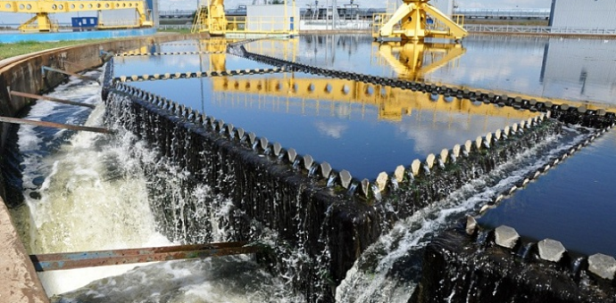

Петербургский водоканал перешёл на поддержку в RKIT
11.11.2019
RKIT c октября 2019 года обеспечивает техническую поддержку системы электронного документооборота ГУП «Водоканал Санкт-Петербурга».
Собственником имущества ГУП «Водоканал Санкт-Петербурга» является город Санкт-Петербург в лице уполномоченных государственных органов. Предприятие обеспечивает услугами водоснабжения и канализования жителей Петербурга — 5,3 миллиона человек, а также десятки тысяч предприятий и организаций города. В ведении петербургского Водоканала находятся также городские фонтаны, общественные туалеты, а также стационарные снегоплавильные пункты. В систему водоснабжения Санкт-Петербурга входят: · 7 414 км водопроводных сетей; ·187 повысительные насосные станции; ·9 водопроводных станций; ·2 завода по производству гипохлорита натрия.
В системе электронного документооборота «Водоканал Санкт-Петербурга» работают около 500 сотрудников организации. Система включает 2 модуля: ·«Управление документооборотом»: внутренняя и внешняя корреспонденция, служебные записки и информационные письма, ОРД, протоколы совещаний, планы мероприятий; ·«Архивное делопроизводство»: структурированное хранение электронных копий документов, формирование и ведение номенклатуры дел предприятия и его структурных подразделений, списание документов, передача дел между структурными подразделениями предприятия и в архив организации, фиксация фактов уничтожения и утраты документов, поиск, формирование отчётов и печатных форм. Техподдержка RKIT обеспечивает стабильную и бесперебойную работу системы электронного документооборота. В ведение RKIT также входит обновление, модернизация и корректировка текущих настроек системы по запросам ГУП «Водоканал Санкт-Петербурга».
Смотрите также:
RKIT победил во всероссийском конкурсе «Лучший ИТ-проект для нефтегазовой отрасли»!
В конце недели в Санкт-Петербурге прошёл V федеральный ИТ-форум нефтегазовой отрасли России "Smart Oil & Gas: Цифровая трансформация нефтегазовой индустрии".
01.10.2019
Управление проектами на Docsvision
19 июня мы провели вебинар на тему управления проектами на Docsvision.
24.06.2019
Подпишитесь на нашу рассылку, чтобы быть в курсе новостей
RKIT победил во всероссийском конкурсе «Лучший ИТ-проект для нефтегазовой отрасли»!
В конце недели в Санкт-Петербурге прошёл V федеральный ИТ-форум нефтегазовой отрасли России "Smart Oil & Gas: Цифровая трансформация нефтегазовой индустрии".
01.10.2019
Управление проектами на Docsvision
19 июня мы провели вебинар на тему управления проектами на Docsvision.
24.06.2019